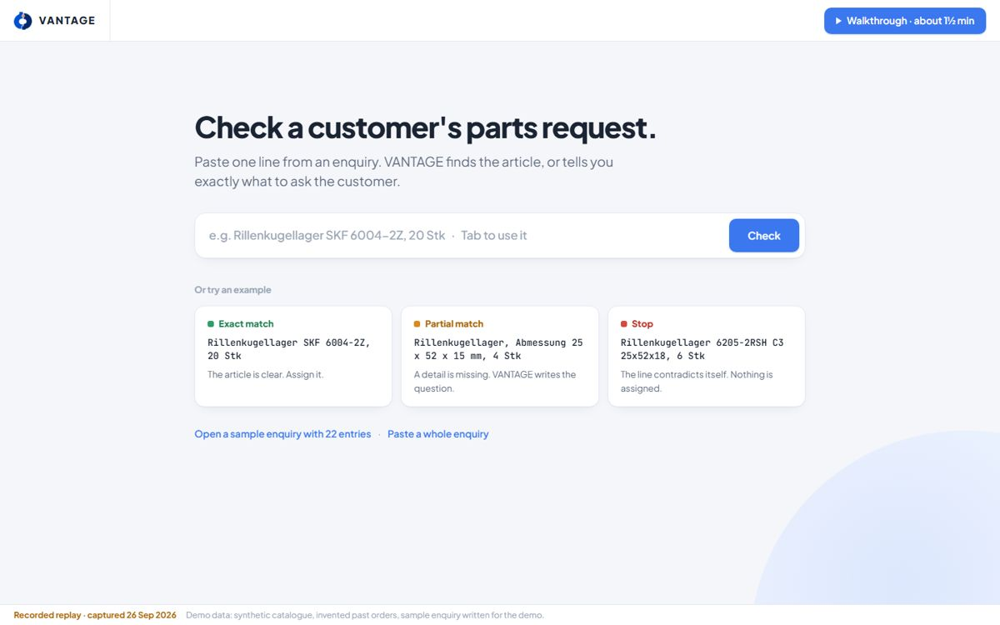
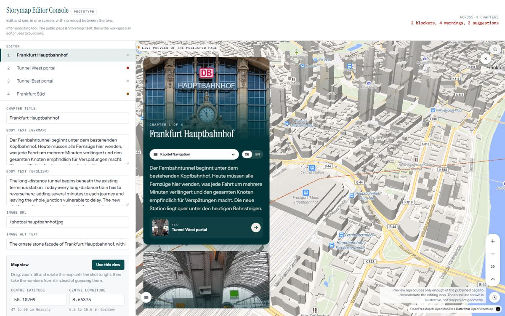
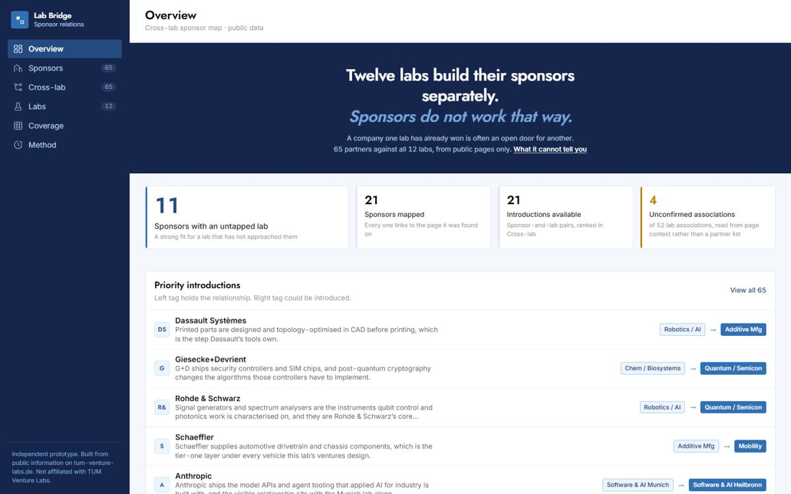
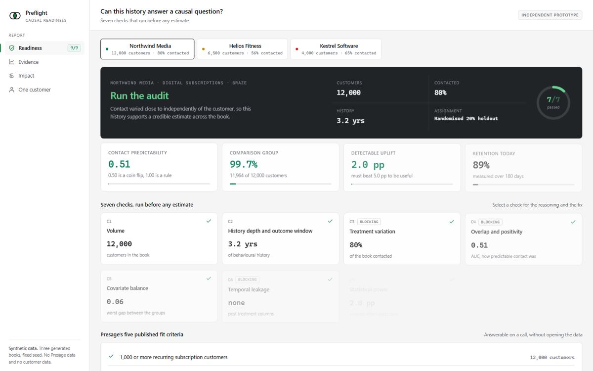
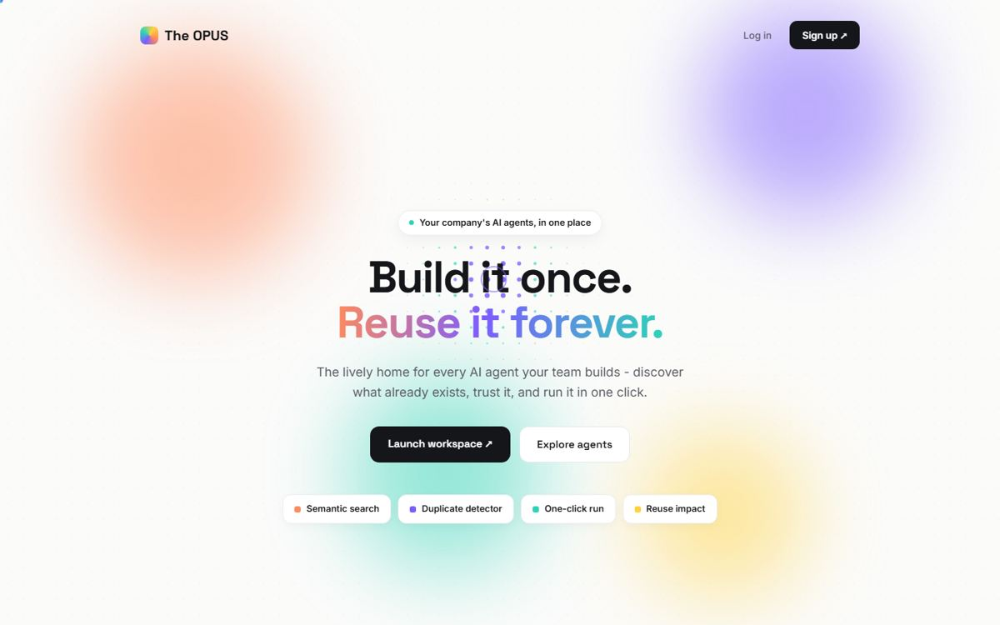
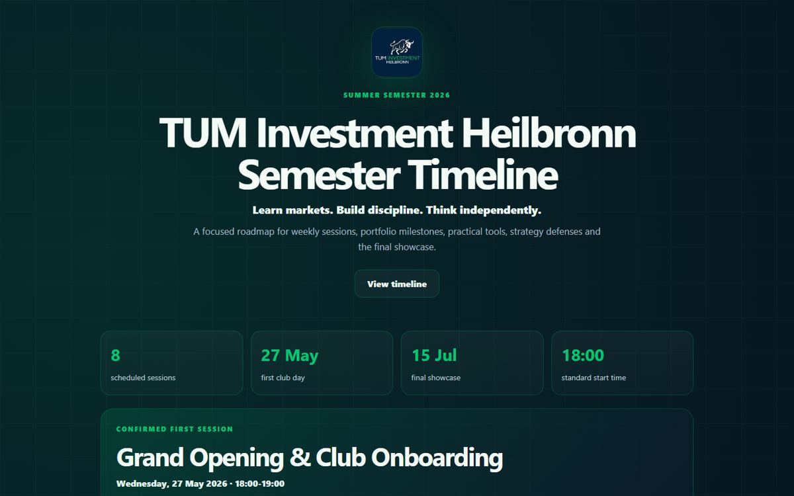

Work

- Problem
- Business customers ask a parts supplier for parts in their own words. A salesperson then searches a very large catalogue by hand.
- What it does
- It reads the request, finds candidates in the catalogue and checks the details it can verify. It proposes the product, asks one question when a detail is missing, or stops when the facts conflict.
- AI decision
- I tested two local language models as the reading step. The smaller one invented about 4 in 10 values, a larger one about 1 in 100, and a simple rule still found more right parts. So no model makes the decision, and the same request always gets the same answer.
- My part
- The matching engine and its evaluation, in Python. Built with Jeet Upadhyay, who built the interface, for the challenge set by Boie GmbH.
- Next
- Boie invited us on site in October to discuss an in-house version. We also applied to the Campus Founders Incubator.
- Problem
- A small setting mistake can make a client's interactive map look wrong, and no error message shows it.
- My part
- I build an automatic check that finds these mistakes before clients see them. I defined how every error is logged so the team can trace it, and made sure logs never expose passwords or keys.
- Tools
- TypeScript, Next.js, Strapi, GraphQL, PostgreSQL, Docker, Bitbucket, ClickUp. TUM Mittelstand Zukunftslab with die wegmeister GmbH, Stuttgart.
Company code, not public

- Problem
- The challenge asked how to cut Storymap creation from 5 hours to 30 minutes. My guess: most of the time goes into a check and fix loop around the map camera.
- What I built
- A split screen editor. "Use this view" takes the camera values straight from the map, and live checks catch wrong coordinates, missing alt text and empty translations before saving.
- Result
- 81 consecutive edits with zero reloads. die wegmeister liked it, and it is now a reference in the challenge.

- Problem
- Twelve labs each find their own sponsors. A company already working with one lab is often an unused opening for another.
- What I built
- A map of 65 public partners against all twelve labs, with a ranked list of introductions that names the lab which could make each one. AI agents did the research and first pass scoring; every link goes back to its source.

- Problem
- Presage, a CRM startup, publishes fit criteria that check how much data a company has. None checks whether that data can show a causal effect at all.
- What I built
- Seven checks in Python and pandas. Each returns green, amber or red with a reason and a remedy, simple enough to verify by hand.

- Problem
- Inside a company, teams rebuild the same AI tools because nobody knows what already exists.
- What we built
- Describe a need in plain words, get matched to agents that already exist, and run one in a click.
- My part
- Shaping that flow, and keeping it small enough to ship live overnight. TechOn hackathon at TECH by Handelsblatt, with Jeet Upadhyay and Mehmet Adil Ozturk.
- Exam packages
- A1 packages with 615 reading questions, 800 listening questions, 154 writing tasks and a speaking set. Writing answers are scored by a Gemini Flash checker that has to pass a benchmark built on official Goethe graded answers.
- Research system
- A Python tool that prepares each B2B sales call, with 159 automated tests and every fact linked to its source. When one version failed a release check on 15 fresh accounts, I held it back.
- Outreach
- After a post mortem of a failed email round, one line first messages got 3 calls from 8, against 0 from 25 emails.
germanmadeeasy.in ↗Code private: data about real businesses
- Question
- Can a forecast with low statistical error still create high inventory cost?
- Finding
- Across 24 parts and 78 weeks, the most accurate of five methods cost about 8 times more on the test weeks than a less accurate forecast with a safety buffer. Running out of a part costs far more than holding one extra.
- Setting
- Programming for Management Studies at TUM, group of five. I led forecasting. Python, pandas, scikit-learn, Jupyter.
Notebook ↗Group project

- What I built
- Operations for a new student investment club: the application form, the timetable, and a rubric so selection ran on stated criteria.